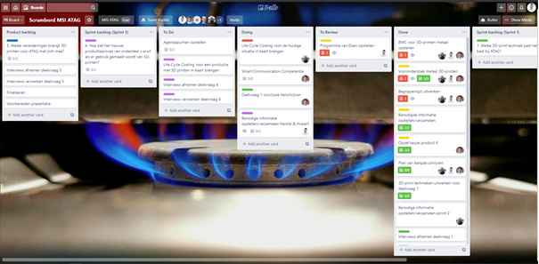
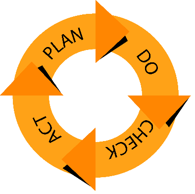

Situatieanalyse
Een goede samenwerking begint met communicatie. Om dit scherp te stellen heeft het team voor het start van het project een plan van aanpak (PvA) opgesteld. Het PvA zorgt ervoor dat het project overzichtelijk wordt en blijft. Daarnaast zorgt een PvA ervoor dat het project tot een goed einde wordt gebracht. Het PvA geeft houvast voor het project waarin het onderzoek wordt uitgevoerd, met daarbij de hoofd- en deelvragen, projectgrenzen & randvoorwaarden, communicatie et cetera.
Voor het onderzoek heeft het team de volgende communicatiedoelen voor de organisatie:
• Informatie en kennis verstrekken;
• Transparant/ inzicht geven van voortgang;
• Feedback verkrijgen.
Aan de hand van dit onderzoek kan de organisatie een overweging maken voor het maken van keuze voor het vervolg van 3D-printen van metaal.
Het communicatiedoel is SMART geformuleerd als volgt:
Met het onderzoek wil het team tijdens het project de hoofd- en deelvragen hebben beantwoord om een advies/businesscasevoorstel te doen aan de organisatie. Door het doen van dit onderzoek kan het team zich alvast voorbereiden voor de afstudeeropdracht die na dit project volgt. Daarnaast is het onderwerp vrij nieuw en draagt dit onderzoek bij met het uitbreiden van de kennis van 3D-printen. Als laatst heeft het team de gelegenheid om aangeleerde theorie van de minor Smart Industry toe te passen.
Door middel van Scrum methodiek zijn de deelvragen verdeeld over de sprint (duur van 2 weken). Tijdens deze sprints worden de deelvragen beantwoord en opgeleverd in rapportvorm en gepresenteerd aan de organisatie en de HAN.
Om alle belanghebbenden op één lijn te krijgen heeft het team met de organisatie en de HAN afgesproken om de eerste versie van het PvA te presenteren voor het start van het project. Op deze manier kan het project goed van start gaan en heeft de organisatie en de HAN de gelegenheid om het doel van het onderzoek te beoordelen en te bepalen of zij hier ook achter staan.
Voor tussentijdse vragen met belanghebbende vindt communicatie plaatst via het Team-omgeving van ATAG. Om het kort samen te vatten gebruikt het team de volgende communicatie vormen:

Doelen van succesvolle communicatie binnen het project voor ATAG zijn:
Effectief communiceren is altijd belangrijk. Of dit nou privé, voor werk of voor een schoolopdracht is, het is nooit fijn om miscommunicaties te ondervinden. Daarom is het van belang dat er duidelijk is wanneer er effectief gecommuniceerd wordt, met wie en wat de succesfactoren zijn van effectieve communicatie. Voor effectieve communicatie is luisteren erg belangrijk (Smithuis & van den Ouden , 2013). Veel mensen zijn alleen bezig met luisteren om daarna zelf weer te kunnen praten. De kern van luisteren is juist de behoeften, gevoelens en gedachten van de ander te leren kennen. Om zo goed mogelijk te luisteren is het belangrijk om te luisteren, samen te vatten en door te vragen. Door op deze manier te luisteren, is het duidelijk dat de boodschap begrepen is en er interesse ligt. Het meten van de effectiviteit van communicatie is natuurlijk moeilijk. Het is niet mogelijk om te meten of iets bij iemand binnenkomt. Daarom is er een principe vanuit de marketing wat ook goed te gebruiken valt bij persoonlijke communicatie. Dit gaat om de methode van kennis, houding en gedrag. De enige factor hierin waarbij succes te meten is, is gedrag. Het veranderen van het huidige gedrag naar het gewenste gedrag betekent dat er goed gecommuniceerd wordt. Via de scrum methodiek die tijdens dit project gebruikt wordt, valt het succes van de communicatie ook goed te meten. Er wordt in kleine sprints gewerkt en als de doelen in deze sprints niet behaald worden, kan het ook liggen aan de effectiviteit van de communicatie.
Tijdens het project met ATAG hebben wij gebruik gemaakt van meerdere communicatie technieken. De allereerste stap van goed communiceren is het identificeren van de stakeholders. De stakeholders tijdens het project zijn:De PDCA-cyclus geeft het principe weer van continue verbetering en wordt gevormd door de facetten Plan-Do-Check-Act. Met dit principe wordt aangegeven dat voor het bereiken van een hogere kwaliteit een continue cyclus op gang moet worden gebracht van het plannen van acties, het ten uitvoer brengen van geplande acties, het checken of de resultaten van de acties werkelijk zijn zoals was beoogd, en het bijsturen of bijstellen van de uitvoering of plannen naar aanleiding van de checkresultaten. Team ATAG hanteert een PDCA-Cyclus door gebruik te maken van de SCRUM projectmethodiek.
Binnen SCRUM zijn er verschillende punten waar continue verbetering terugkomt. Het Scrumbord is hier een mooi voorbeeld van. Het Scrumbord bestaat uit de volgende kolommen: ‘To Do’, ‘Doing’, ‘To Review’, ‘Reviewed’, Done Op het Scrumbord plant team ATAG alle taken voor de aankomende Sprint in. Deze taken komen in de kolom “To Do” te staan, dit betreft de “Plan’ fase. Vervolgens worden deze taken door de teamleden uitgevoerd en in de kolom ‘Doing’ geplaatst, dit betreft de ‘Do’ fase. Wanneer een taak wordt afgerond, komt deze in de kolom ‘To Review’ te staan. Een ander teamlid kan deze taak vervolgens controleren en feedback geven, dit betreft de ‘Check’ fase. Tot slot wordt de gegeven feedback gecontroleerd door het derde teamlid waarna de taak uiteindelijk naar de ‘Done’ kolom wordt verplaatst, dit betreft de ‘Act’ fase. Voor het scrumbord, zie: Figuur 1 - Scrumbord Team ATAG.
De PDCA-cyclus komt ook terug bij de dag start en bij de middag bespreking van team ATAG. Aan het begin van iedere werkdag plant het team de dag in en worden de taken verdeeld, dit betreft de ‘Plan’ fase. Vervolgens gaan de teamleden aan de slag met zijn of haar taken, dit betreft de ‘Do’ fase. Tijdens de middag bespreken toont ieder teamlid aan tot hoever hij of zijn is gekomen met de taken en controleren de andere teamleden of deze naar verwachting zijn uitgevoerd. Hiernaast worden eventuele tips of feedback gegeven, dit betreft de ‘Check’ fase. Tot slot gaan de teamleden door met het uitvoeren van de taken waarbij de feedback wordt meegenomen, dit betreft de ‘Act’ fase. 
(2014). In P. Thuis, Toegepaste organisatiekunde.
(2013) Smithuis & van den Ouden ,tien tips voor succesvol communiceren.
Hendriks, H. (2017). Procesmanagement. In H. hendriks, Procesmanagement in de praktijk.